Satellite et orbite
Un satellite est un corps en orbite autour d'un autre. Une orbite est l'ensemble des positions occupées dans l'espace par un astre ou un satellite lorsqu'il est en mouvement autour d'un astre de masse plus grande que la sienne.
Loi d'attraction universelle
Deux corps A et B, de masses respectives mA et mB, séparés d'une distance d, exercent l'un sur l'autre une force d'attraction gravitationnelle :

🔭 Simulation PhET — Gravité et orbites
Ouvre la simulation Gravity and Orbits (PhET Colorado, en français) et explore le mode « À l'échelle » avec le système Soleil-Terre.
- Active l'affichage des vecteurs force et vitesse : vérifie qu'ils illustrent bien le couple action-réaction FA/B = − FB/A.
- Fais varier la masse du Soleil : observe comment évoluent la force gravitationnelle et la trajectoire de la Terre.
- Éloigne la Terre du Soleil (augmente d) : comment évolue la norme de la force ? Est-ce cohérent avec la loi en 1/d² ?
- Teste ensuite le système « Soleil, Terre, Lune » : que remarques-tu sur la trajectoire de la Lune, entraînée à la fois par la Terre et le Soleil ?
Le repère de Frenet
Le repère de Frenet, noté (M ; ut ; un), a pour origine mobile le point M(t) et utilise deux vecteurs unitaires partant de ce point :
- le vecteur tangentiel ut, tangent à la trajectoire et orienté dans le sens du mouvement ;
- le vecteur normal un, perpendiculaire à ut et orienté vers l'intérieur de la courbure.
🧭 Animation interactive — Repère de Frenet sur une trajectoire circulaire
Fais varier le rayon R et la vitesse v du point M à l'aide des curseurs, et observe comment évoluent les vecteurs ut, un, v et a (le mouvement est ici circulaire uniforme : v = constante).
Vecteurs vitesse et accélération dans le repère de Frenet
Dans le repère de Frenet (M ; ut ; un), en notant v(t) la valeur de la vitesse du point M au cours du temps, les coordonnées des vecteurs vitesse v(t) et accélération a(t) sont :

- Choisir le système {satellite S, masse m} et le référentiel d'étude (galiléen).
- Identifier la seule force extérieure : la force de gravitation exercée par l'astre.
- Appliquer la 2e loi de Newton (PFD).
- Utiliser l'expression de l'accélération dans le repère de Frenet pour un mouvement circulaire.
- Identifier terme à terme pour en déduire v, puis T.
Mise en équation
Système : satellite S de masse m | Référentiel : astrocentrique, supposé galiléen | Le satellite n'est soumis qu'à la force de gravitation exercée par l'astre de centre O et de masse M.
D'après la 2e loi de Newton :
Le vecteur a est colinéaire et de même sens que un (dirigé vers O) : l'accélération est centripète, ce qui est cohérent avec un mouvement circulaire uniforme. Or, dans le repère de Frenet, une accélération centripète s'écrit a = v²/r · un, donc :
Période de révolution
Le satellite parcourt son orbite circulaire de périmètre 2πr à la vitesse constante v ; la période T est la durée d'un tour complet :
🛰️ Simulateur — Satellite en orbite circulaire autour de la Terre
Fais varier l'altitude du satellite et observe l'évolution des vecteurs vitesse et accélération, ainsi que de la période de révolution.
✏️ Exercice — La Station spatiale internationale (ISS)
Satellite géostationnaire
Un satellite est dit géostationnaire lorsqu'il paraît immobile pour un observateur terrestre : il est fixe dans le référentiel terrestre. Sa période de révolution est donc égale à la période de rotation de la Terre sur elle-même, soit T = 23 h 56 min ≈ 86 164 s (jour sidéral), et son orbite est nécessairement circulaire, équatoriale.
✏️ Exercice — Altitude d'un satellite géostationnaire
Première loi de Kepler — loi des orbites
La distance Soleil–planète n'est pas constante. La position la plus proche du Soleil est le périhélie (ou périgée pour un satellite terrestre), la position la plus éloignée est l'aphélie (ou apogée).
✏️ Exercice — L'orbite très excentrique de la comète de Halley
Deuxième loi de Kepler — loi des aires
Conséquence directe : la vitesse d'une planète n'est pas constante sur son orbite elliptique. Elle est maximale au périhélie (proche du Soleil) et minimale à l'aphélie (loin du Soleil). Seule une trajectoire circulaire permet d'obtenir une vitesse constante (mouvement uniforme).
🪐 Animation — Balayage des aires égales
La planète P parcourt son orbite elliptique autour du Soleil S. Deux arcs sont mis en évidence, balayés pendant la même durée Δt : l'un proche du périhélie (rouge), l'autre proche de l'aphélie (vert). Lance l'animation : observe que la planète parcourt l'arc rouge rapidement et l'arc vert lentement, alors que les deux aires balayées 𝒜₁ et 𝒜₂ sont rigoureusement égales.
👉 Pour manipuler toi-même une autre simulation de la loi des aires : physique.ostralo.net/kepler
Justification à partir de la loi des aires
Pendant une même durée Δt, la planète parcourt un arc de longueur L₁ près du périhélie, et un arc de longueur L₂ près de l'aphélie, avec L₁ > L₂ (car l'aire balayée est la même mais le rayon vecteur est plus court au périhélie). Comme v = L/Δt :
Le mouvement de la planète n'est donc pas uniforme : c'est une conséquence directe de la 2e loi de Kepler.
✏️ Exercice — Satellite sur une orbite très excentrique
Troisième loi de Kepler — loi des périodes
Pour deux planètes 1 et 2 en orbite autour du même astre : T₁²/a₁³ = T₂²/a₂³. Si la trajectoire est circulaire, alors a = r (rayon de l'orbite) et on a T²/r³ = constante.
Preuve graphique de la 3e loi
Si l'on trace le carré de la période T² en fonction du cube du demi-grand axe a³ pour plusieurs planètes du Système solaire, les points obtenus sont alignés sur une droite passant par l'origine : c'est la signature graphique d'une proportionnalité, T² = k×a³.
Expression de la constante
On a établi en A1 (cas circulaire) : T = 2π√(r³/GM), soit T² = 4π²r³/GM, d'où :
🧮 Calculatrice — Loi des périodes
Connaissant (a₁, T₁) pour une planète de référence, calcule T₂ pour une autre planète de demi-grand axe a₂ (même astre central).
✏️ QCM — Loi des périodes
À l'assaut de l'espace
La « conquête spatiale » n'a pas débuté avec le lancement des premiers satellites artificiels : elle a lieu dès lors que l'on observe le ciel.
🎯 Objectif : établir des repères historiques concernant la mécanique céleste et les satellites.
Document

Questions
1. Pour chacun des savants du doc. 1, associer sa nationalité, ses dates de naissance et de mort et ses apports à la connaissance du mouvement des planètes.
2. a. Attribuer des noms français aux astres de l'orbite dessinée (doc. 2), en les classant du centre vers la périphérie.
b. Qu'est-ce que le système de Ptolémée ?
Le schématiser sur votre feuille (comparez votre schéma à celui de la correction en fin d'activité).
c. D'après vos connaissances, quelles erreurs présente le schéma du doc. 2 ?
3. Pour chacun des livres du doc. 3, rechercher sa date de parution et préciser s'il est fictif ou non.
4. Rechercher la date et l'auteur de chaque événement du doc. 4.
Bilan. D'après vous, quelles découvertes sont les plus marquantes dans l'histoire de la connaissance de l'Univers ? Argumenter.
1. Ptolémée (100-168, Grec) : compilation de savoirs de plusieurs siècles avant lui. Copernic (1473-1543, Polonais) : proposition d'un modèle héliocentrique. Tycho Brahé (1546-1601, Danois) : observations de grande qualité. Kepler (1571-1630, Allemand) : formulation des lois portant son nom. Galilée (1564-1642, Italien) : reprise de l'héliocentrisme après observation des satellites de Jupiter.
2. a. Du centre vers la périphérie : Mercure, Vénus, Terre (avec la Lune), Mars, Jupiter, Saturne, étoiles fixes.
b. Système géocentrique de Ptolémée : la Terre immobile au centre, tous les astres tournent autour d'elle.
 c. Erreurs du doc. 2 : planètes manquantes (inconnues à l'époque), orbites toutes circulaires et non à l'échelle.
c. Erreurs du doc. 2 : planètes manquantes (inconnues à l'époque), orbites toutes circulaires et non à l'échelle.
3. Copernic (1543), Kepler (1609), Galilée (1632) : ouvrages scientifiques non fictifs. Jules Verne (1865) : roman, fictif. Hergé (1953-1954) : bande dessinée, fictive.
4. Distance Terre-Lune : Aristarque de Samos, IIIe s. av. notre ère. Satellites de Jupiter : Galilée, 1609. Anneaux de Saturne : Huygens, 1659. Satellite artificiel : URSS, 1957. Pied sur la Lune : Armstrong, 1969. Sonde hors système solaire : Nasa, 1977. Robot sur une planète : Nasa, 1996. Arrimage sur une comète : ESA, 2014.
Bilan : réponse libre — une découverte s'inscrit toujours dans une évolution globale des sciences et techniques.
Activité 2 — Étude d'un mouvement circulaire
Notions : Mouvement circulaire · Repère de Frenet · Vecteurs vitesse et accélération (§1 p. 302)
Dans le référentiel terrestre, le mouvement d'un point du plateau d'un manège en fonctionnement est circulaire. La valeur de sa vitesse varie toutefois entre les phases de démarrage et d'arrêt du manège.
● Comment caractériser les vecteurs vitesse et accélération d'un point en mouvement circulaire ?


Les tracés sont à réaliser sur la version numérique du document (enregistrement téléchargeable ci-dessus).
1. Analyser-Raisonner
a. Qualifier le mouvement du point M pour chaque phase présentée dans le DOCUMENT.
Phase 1 (démarrage)
Phase 2
Phase 3 (arrêt)
b. En un point Mi choisi dans chaque phase, tracer au crayon à papier l'allure du vecteur vitesse vi et éventuellement celle du vecteur accélération ai. Aucune justification n'est demandée. Seuls la direction et le sens des vecteurs sont attendus.
c. D'après les DONNÉES, déterminer, dans le repère de Frenet, les coordonnées des vecteurs vi et ai aux points Mi choisis. Préciser les coordonnées nulles.
d. Représenter le repère de Frenet aux points Mi choisis puis corriger éventuellement le tracé des vecteurs vi et ai selon les résultats précédents.
2. Réaliser
Pour chaque point Mi choisi, construire avec précision les vecteurs vitesse en Mi−1 et Mi+1 puis en déduire le vecteur accélération en Mi. Confronter les résultats obtenus à ceux attendus d'après la question 1.d.
3. Communiquer GRAND ORAL
Caractériser les vecteurs vitesse et accélération dans le repère de Frenet pour les mouvements circulaires et uniforme.
1.a Phase 1 (démarrage) : la valeur de la vitesse augmente → mouvement circulaire accéléré. Phase 2 : la valeur de la vitesse est constante → mouvement circulaire uniforme. Phase 3 (arrêt) : la valeur de la vitesse diminue → mouvement circulaire ralenti (décéléré).
1.b, 1.c et 1.d Dans les trois phases, le vecteur vitesse est tangent à la trajectoire, orienté dans le sens du mouvement, de coordonnées (vt = v(t) ; vn = 0). Le vecteur accélération a toujours une composante normale an = v²/R > 0, dirigée vers le centre O (car R est constant et v ≠ 0) ; sa composante tangentielle at = dv/dt dépend de la phase :
- Phase 1 (démarrage) : at > 0 (v augmente) — l'accélération pointe globalement « en avant » de la trajectoire.
- Phase 2 (uniforme) : at = 0 — l'accélération est purement centripète, dirigée exactement vers O.
- Phase 3 (arrêt) : at < 0 (v diminue) — l'accélération pointe globalement « en arrière » de la trajectoire.
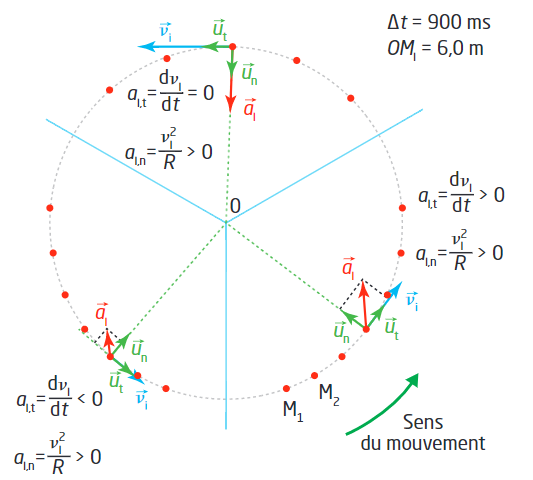
2. Les vecteurs vitesse v(t1) (le long de M0M2) et v(t3) (le long de M2M4) sont construits en M2. Le vecteur variation Δv(t2) = v(t3) − v(t1) s'obtient en additionnant v(t3) et l'opposé de v(t1). Le vecteur accélération a(t2) est colinéaire à Δv(t2) (même direction et même sens, à un facteur 1/Δt près). On retrouve bien un vecteur dirigé vers l'intérieur de la trajectoire, cohérent avec la composante normale an > 0 obtenue en 1.c/1.d — avec ici, selon la phase choisie, une légère composante tangentielle si la vitesse varie entre M1 et M3.
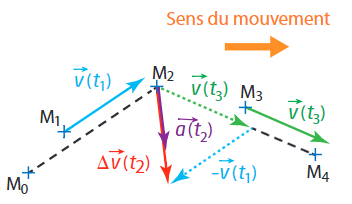
3. Pour un mouvement circulaire quelconque, l'accélération a une composante normale an = v²/R > 0 (centripète, dirigée vers le centre) et une composante tangentielle at = dv/dt (non nulle si la vitesse varie). Pour un mouvement circulaire uniforme (v constante), at = 0 : l'accélération se réduit à sa seule composante normale, purement centripète.
Activité 3 — Lois de Kepler
Notions : Lois de Kepler · Éphémérides · Programmation Python (§3 p. 300)
Pour décrire le mouvement des planètes du Système solaire, le mathématicien allemand Johannes Kepler (1571-1630) énonce trois lois empiriques à partir des observations de l'astronome danois Tycho Brahé (1546-1601). La loi d'interaction gravitationnelle énoncée par le physicien anglais Isaac Newton (1642-1727) les confirme et les étend aux satellites en orbite autour d'une planète.
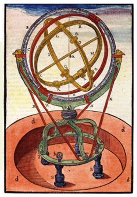
● Comment tester les lois de Kepler à partir de données astronomiques ?
Données 1 — Énoncés des lois de Kepler
- Première loi de Kepler ou loi des orbites — Dans le référentiel héliocentrique, la trajectoire du centre P d'une planète est une ellipse dont l'un des foyers est le centre S du Soleil.
- Deuxième loi de Kepler ou loi des aires — Le segment [SP] qui relie le centre S du Soleil au centre P d'une planète balaie des aires égales pendant des durées égales.
- Troisième loi de Kepler ou loi des périodes — Le quotient du carré de la période de révolution T d'une planète par le cube du demi-grand axe a de son orbite est égal à une même constante k pour toutes les planètes du Système solaire.
Données 2 — Propriétés d'une ellipse 🌐 Animation
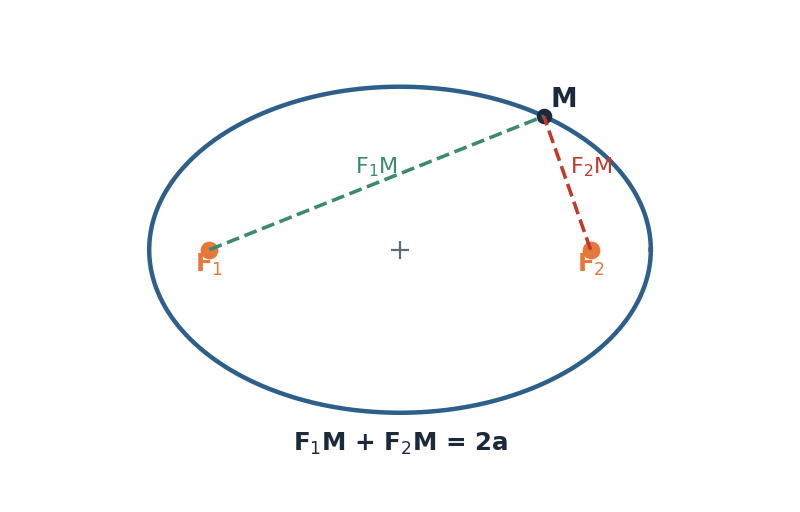
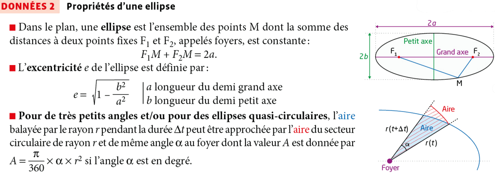
Données 3 — Unité astronomique
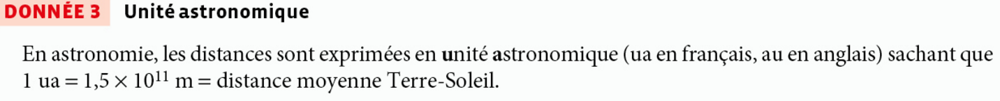
Doc. 1 — Coordonnées écliptiques d'une planète
Le plan de l'écliptique, plan de l'orbite terrestre autour du Soleil, évolue très légèrement dans le temps. La position d'une planète est repérée par les astronomes par rapport au plan de l'écliptique d'une date de référence (1er janvier 2000 pour J2000).
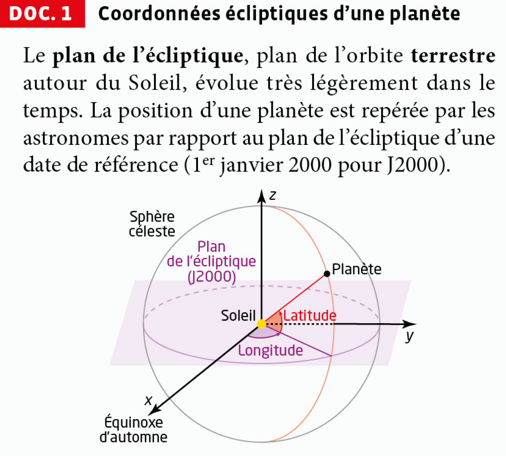
Doc. 2 — Éphéméride
Le site vo.imcce.fr/webservices/miriade/ permet d'accéder à l'éphéméride des positions d'une planète dans le Repère Héliocentrique Écliptique J2000 (RHEJ2000).
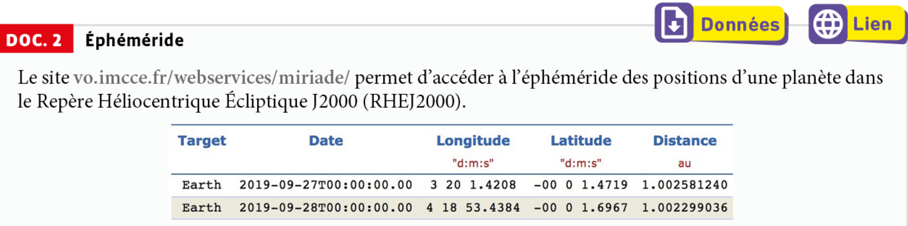
Doc. 3 — Extrait du code Python permettant de tester la 2e loi de Kepler
Dans l'extrait de code ci-dessous, les variables longitude et distance sont deux listes contenant les données issues de l'éphéméride des positions quotidiennes de la Terre sur une année depuis l'équinoxe d'automne (fichier AD3-donnees1.txt, données RHEJ2000).
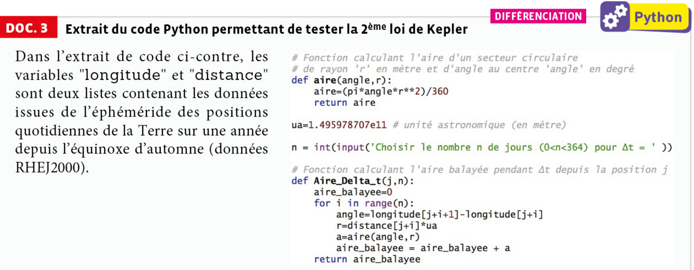
Données 4 — Caractéristiques des planètes du Système solaire
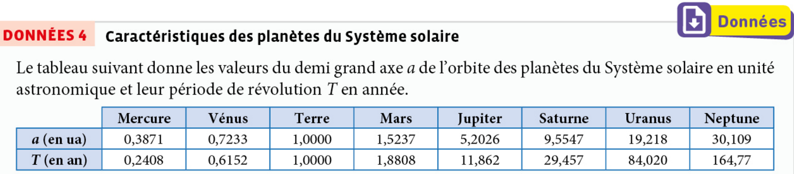
📁 Fichiers à télécharger
1. S'approprier
a. Le cercle est une ellipse particulière. Préciser les caractéristiques de cette ellipse.
b. Réaliser un schéma permettant de représenter graphiquement la deuxième loi de Kepler.
c. Donner une expression mathématique de la troisième loi de Kepler.
2. Analyser-Raisonner
a. Donner la valeur de la longitude de la Terre à l'équinoxe d'automne.
b. La latitude de la Terre n'intervient pas dans la fonction Aire_Delta_t de l'extrait de code Python. Indiquer et justifier l'approximation permettant de procéder ainsi.
3. Analyser-Raisonner ▸ Réaliser
À l'aide des documents et des données, compléter les codes sources Python fournis (téléchargeables ci-dessus) afin de tester la deuxième et/ou la troisième loi de Kepler.
Aire_Delta_t, range toutes ces valeurs dans une liste, puis calcule sa moyenne (np.mean) et son incertitude-type (np.std(...,ddof=1)/√N) — si la loi des aires est vérifiée, ces valeurs doivent être quasiment toutes égales (histogramme resserré). Pour la 3e loi : trace T² en fonction de a³ pour les 8 planètes et modélise le nuage de points par une droite (np.polyfit) ; le coefficient directeur k permet ensuite de remonter à la masse du Soleil via k = 4π²/(G·MSoleil).4. Communiquer GRAND ORAL
Présenter oralement les résultats obtenus lors de l'exécution des programmes Python puis établir le lien avec les deux lois de Kepler testées.
1.a Un cercle est une ellipse particulière pour laquelle le demi-grand axe et le demi-petit axe sont égaux : a = b. L'excentricité vaut alors e = √(1 − b²/a²) = √(1 − 1) = 0. Les deux foyers F₁ et F₂ sont alors confondus avec le centre du cercle.
1.b Sur une ellipse dont le Soleil S occupe un foyer, on représente deux secteurs d'aires égales A₁ = A₂, balayés pendant la même durée Δt : un secteur proche du Soleil (rayon r court, grand angle α balayé — la planète y va vite, au voisinage du périhélie) et un secteur éloigné du Soleil (rayon r long, petit angle α balayé — la planète y va lentement, au voisinage de l'aphélie).
1.c Pour une planète de période de révolution T et de demi-grand axe a : T²/a³ = k, où k est une constante identique pour toutes les planètes du Système solaire (même astre attracteur, le Soleil).
2.a Sur le Doc. 1, l'axe x du repère héliocentrique écliptique J2000 pointe précisément vers la direction de l'équinoxe d'automne : cette direction sert d'origine (0°) à la longitude. La longitude de la Terre à l'équinoxe d'automne vaut donc 0°. Le Doc. 2 le confirme : le 27/09/2019 (quelques jours après l'équinoxe, qui a lieu vers le 23 septembre), la longitude de la Terre ne vaut que 3°20′, une valeur proche de 0° — cet écart correspond au léger déplacement de la Terre sur son orbite entre l'équinoxe et la date du relevé.
2.b Dans le tableau du Doc. 2, la latitude de la Terre est de l'ordre de quelques secondes d'arc (≈ 1 à 2″), donc totalement négligeable devant les longitudes exprimées en degrés. On peut donc approximer le mouvement de la Terre comme s'il se déroulait exactement dans le plan de l'écliptique (mouvement plan, latitude nulle) : cette approximation permet de calculer l'aire balayée SP à l'aide de la seule formule plane d'un secteur circulaire (Données 1), en ne connaissant que la longitude et la distance Soleil-Terre — sans avoir à corriger de trigonométrie 3D.
3. Programmes complétés (extraits) :
Exécuté sur le fichier réel AD3-donnees1.txt avec Δt = n = 30 jours (334 valeurs d'aire calculées, une par position de départ possible) :
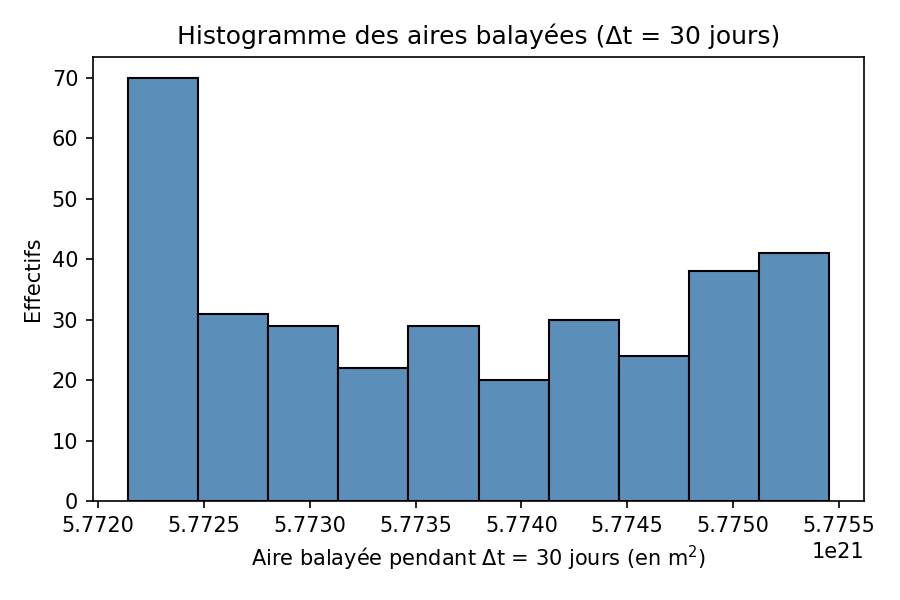
L'histogramme est très resserré autour de la moyenne : quelle que soit la position de départ choisie sur l'orbite, l'aire balayée pendant une même durée Δt est (quasiment) la même. La 2e loi de Kepler (loi des aires) est donc vérifiée, l'incertitude relative (≈ 0,001 %) étant négligeable devant les autres sources d'erreur du modèle.
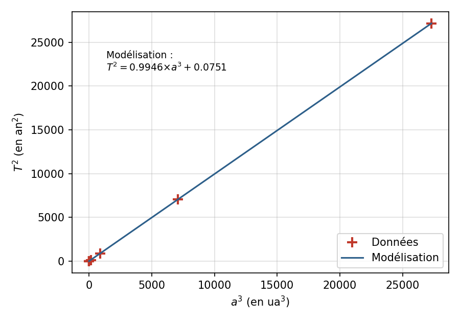
La modélisation donne k ≈ 0,9946 (a en ua, T en année) et une ordonnée à l'origine quasi nulle (b ≈ 0,075, négligeable devant les valeurs de y) : les 8 points sont bien alignés sur une droite passant par l'origine, ce qui vérifie la 3e loi de Kepler (T²/a³ = constante). En reconvertissant k en unités SI et en utilisant k = 4π²/(G·MSoleil), on obtient une masse du Soleil estimée à MSoleil ≈ 2,00×10³⁰ kg, à comparer à la valeur de référence 1,989×10³⁰ kg (écart ≈ 0,5 %, très satisfaisant compte tenu de l'approximation d'orbites circulaires).
4. À l'oral, on présente la méthode (exploitation de données d'éphéméride réelles, calcul statistique pour la 2e loi, régression linéaire pour la 3e), puis les résultats numériques obtenus (aires balayées quasi identiques ⟹ 2e loi vérifiée ; alignement T²/a³ ≈ constante ⟹ 3e loi vérifiée, avec en prime une estimation cohérente de la masse du Soleil), en soulignant que les très faibles écarts observés proviennent des incertitudes de mesure et des approximations du modèle (orbites traitées comme quasi circulaires, latitude négligée) et non d'un défaut des lois de Kepler elles-mêmes.
Activité 4 — Mouvement circulaire
Notions : Mouvement circulaire · Repère de Frenet · Programmation Python (d'après Hatier, chap. 10 p. 293)
Lors de missions spatiales, les astronautes subissent de fortes accélérations, en particulier au décollage. Pour être en mesure de les supporter, ils ont été préalablement entraînés à l'aide de centrifugeuses.
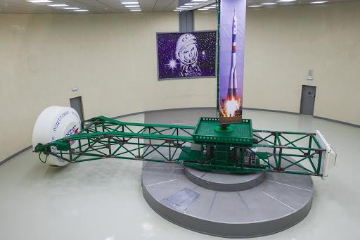
Fig. La centrifugeuse de la Cité des étoiles en Russie a un bras rotatif de rayon R = 7,00 m.
● Comment caractériser le vecteur accélération d'un point en mouvement circulaire, à partir d'un pointage vidéo ?
Doc. 1 — Positions de la cabine d'une centrifugeuse
Pour obtenir une accélération de 4g (g = 9,81 m·s⁻²), la cabine d'une centrifugeuse est mise en rotation. On enregistre ses coordonnées toutes les Δt = 200 ms.
La norme de la vitesse de la cabine augmente pendant un demi-tour : lorsque t ∈ [0 s ; 2,65 s], v(t) = k·t, avec k = 6,26 m·s⁻².
Puis elle est constante : lorsque t ∈ [2,65 s ; +∞[, v = v₀ avec v₀ = 16,6 m·s⁻¹.
Doc. 2 — Le repère de Frenet
Le repère de Frenet utilise deux vecteurs unitaires partant du point M : le vecteur tangentiel ut, tangent à la trajectoire et orienté dans le sens du mouvement ; le vecteur normal un, perpendiculaire à ut et orienté vers l'intérieur de la courbure.
Dans ce repère, le vecteur vitesse est colinéaire à ut, et le vecteur accélération a pour coordonnées (at ; an). Pour un mouvement circulaire de rayon R : at = dv/dt et an = v²/R.
Doc. 3 — Calcul approché des vecteurs vitesse et accélération
Si l'on connaît les vecteurs position OM (O étant l'origine du repère choisi) à intervalles de temps Δt égaux, on peut calculer approximativement les vecteurs vitesse v et accélération a :
📁 Fichiers à télécharger
⚠️ Ce TP est susceptible d'être noté : seuls des indices sont proposés ci-dessous, sans correction.
1. Mouvement de la cabine
a. Exécuter le programme centrifugeuse.py qui trace les positions de la cabine lors du premier tour.
pointage_centrifugeuse.csv dans le même dossier que centrifugeuse.py avant de lancer le programme (sinon l'importation des données échoue).b. Caractériser les deux phases du mouvement. Quand la cabine a-t-elle une accélération non nulle ?
c. En utilisant le doc 3, modifier le programme afin de calculer les coordonnées des vecteurs vitesse et accélération. Le tracé des vecteurs modifie-t-il les réponses de la question 1.b ?
vx[i] et vy[i] à partir de x et y avec la formule du doc 3 (division par 2·Dt), puis fais de même pour ax[i] et ay[i] à partir de vx et vy.2. Étude de l'accélération dans le repère de Frenet
a. Exécuter le programme centrifugeuse_frenet.py. Ce programme trace les coordonnées at et an du vecteur accélération dans le repère de Frenet, obtenues à partir des coordonnées calculées ax et ay.
pointage_centrifugeuse.csv est dans le même dossier, puis exécute-le tel quel pour observer les courbes at(t) et an(t).b. La coordonnée at est au départ positive. Justifier cette observation à partir de l'expression de l'accélération et de la connaissance de la nature du mouvement de la cabine.
c. Comment expliquer le fait que at devienne nulle ensuite ?
d. Sur votre feuille, dessiner l'allure qu'aurait l'évolution de at lors du ralentissement de la cabine.
e. L'accélération obtenue une fois la cabine lancée a-t-elle la valeur attendue, c'est-à-dire 4g ?
3. Comparaison avec le modèle théorique
À partir des doc 1 et 2, déterminer les expressions théoriques de an et at. Compléter alors le programme afin de calculer et de tracer les valeurs théoriques de an et at (notées anth et atth).
centrifugeuse_frenet.py avec ces deux expressions.Activité 5 — Lois de Kepler en Python
Notions : Lois de Kepler · Régression linéaire · Programmation Python (d'après Hatier, chap. 13 p. 377-378)
Les objets célestes ne pouvant évidemment pas être pesés comme les objets terrestres, il faut recourir à des techniques indirectes pour connaître leur masse. Ce TP se compose de deux parties indépendantes.
📁 Fichiers à télécharger
⚠️ Ce TP est susceptible d'être noté : seuls des indices sont proposés ci-dessous, sans correction.
I. Peser un astre avec la troisième loi de Kepler
Doc. 1 — Troisième loi de Kepler
Soit un astre attracteur de masse M, autour duquel des satellites naturels ou artificiels sont en orbite. Soient T la période de révolution d'un satellite, et a le demi-grand axe de son orbite. La constante gravitationnelle est G = 6,67×10⁻¹¹ N·m²·kg⁻².
Protocole — Astres à tester
Choisir un astre dans la liste : Soleil (avec les planètes ou des comètes), Jupiter, Saturne, Uranus, Neptune, Terre (avec des satellites artificiels ou la Lune). Rechercher sur Wikipédia les valeurs de T et a d'au moins six de ses satellites.
Doc. 2 — Tester une loi par une régression linéaire
Soient deux grandeurs x et y liées par la loi y = f(x). Un procédé courant pour tester cette loi consiste à collecter des mesures de (x ; y), à placer les points sur un graphique, à tracer la courbe-modèle et à en déterminer l'équation. Si la courbe-modèle est une droite, la modélisation s'appelle une régression linéaire ; ses paramètres sont le coefficient directeur et l'ordonnée à l'origine.
1. Choisir un astre (protocole) et collecter les données d'au moins six satellites pour remplir les tableaux du programme Python.
a et T du programme, en respectant les unités indiquées en commentaire (km, jours).2.a Pourquoi tracer T² en fonction de a³ et pas T en fonction de a ? Compléter le programme pour créer les grandeurs x = a³ et y = T² (attention, a en mètre et T en secondes).
x[i] et y[i], élève a[i] au cube et T[i] au carré après conversion en unités SI (1 km = 1000 m, 1 j = 86 400 s).2.b Le programme réalise la régression linéaire et fournit le coefficient directeur m de la droite-modèle (qui passe par l'origine). À l'aide du doc 1, déterminer l'expression de m en fonction de G et M, puis compléter le calcul de la masse M de l'astre dans le programme.
Mcalc = ....2.c Exécuter le programme. Relever et commenter les résultats.
3. En posant y = ln(T) et x = ln(a), la troisième loi de Kepler fournit la relation y = (3/2)x + (1/2)ln(4π²/GM). Tracer y en fonction de x permet une meilleure répartition des points. Pour cela, régler tracelog à True. Exécuter le programme modifié. Relever et commenter les résultats.
tracelog=False par tracelog=True, le reste du programme s'adapte automatiquement. Compare ensuite la répartition des points à celle obtenue à la question 2.4. Pour chacune des méthodes utilisées, expliquer comment la troisième loi de Kepler est vérifiée : « le carré de la période de révolution d'un satellite est proportionnel au cube du demi-grand axe de son orbite ».
5. Laquelle des deux méthodes est meilleure pour vérifier cette loi ?
6. Pour chacune des méthodes, expliquer comment la masse M est déterminée.
II. Deuxième loi de Kepler
Aucun objet céleste n'est observé en permanence pour en déterminer la position. À l'aide d'observations ponctuelles et des lois de la mécanique, on peut cependant calculer la position en temps réel de chaque objet.
Doc. 1 — Suivre un satellite en temps réel
La plupart des satellites terrestres font l'objet d'une surveillance : leur position effective est mesurée régulièrement. Le site n2yo.com donne les coordonnées d'un satellite dans le ciel : latitude (LAT), longitude (LONG) en degré, et altitude au-dessus du sol (ALT) en kilomètres.
Doc. 2 — Satellites à suivre
Satellites terrestres ayant une orbite aplatie et une période orbitale de quelques heures (utile pour tester la 2e loi pendant une séance de TP) : Spirale A, Tacsat 4, Express MD2, DSX, Podsat, Akebono.
Doc. 3 — Formule de Héron d'Alexandrie
L'aire S d'un triangle quelconque dont les côtés ont pour longueur a, b et c s'obtient par S = √[p(p−a)(p−b)(p−c)], où p est le demi-périmètre du triangle.
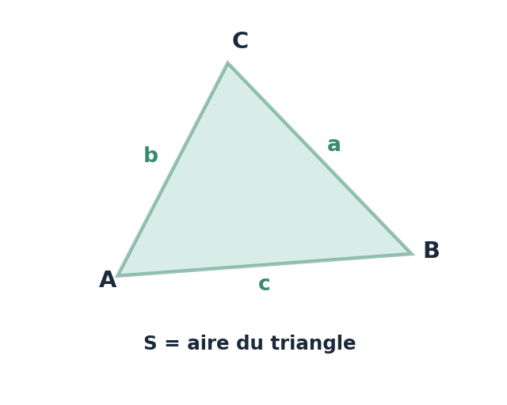
Doc. 4 — Aire balayée
Soient T le centre de la Terre et M un satellite. L'aire S balayée par le segment TM entre les instants t₁ et t₂ est environ l'aire du triangle T·M(t₁)·M(t₂). L'aire balayée par unité de temps, s = S/(t₂−t₁), est aussi appelée vitesse aréolaire.
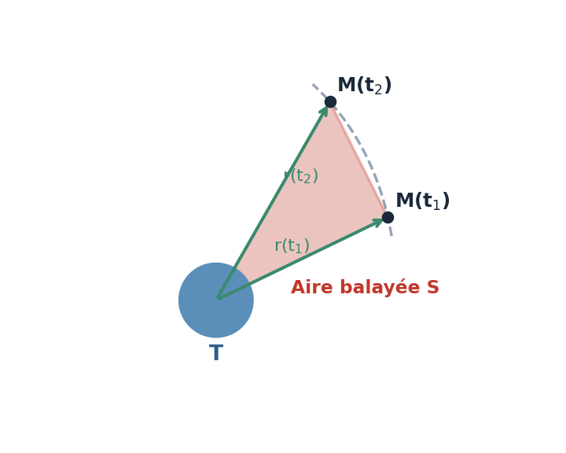
1. Aller sur le suivi de satellite (doc 1) et choisir un satellite (doc 2). Pendant 30 minutes, relever, toutes les 5 minutes, l'instant t, la latitude, la longitude et l'altitude du satellite.
2.a Le programme Python déduit de ces données les positions x, y et z du satellite dans un repère géocentrique. Compléter le programme pour qu'il calcule, à chaque position : la distance à la position suivante (liste d), la vitesse (liste v), l'aire balayée avec la formule de Héron (liste S), et la vitesse aréolaire (liste s).
aire() déjà définie (doc 3) en lui donnant les trois côtés du triangle T-M(i)-M(i+1), c'est-à-dire r[i], r[i+1] et d[i]. La vitesse aréolaire est cette aire divisée par la même durée.2.b Exécuter le programme, traçant le rayon r de l'orbite du satellite, la vitesse v et la vitesse aréolaire s, en fonction du temps. Imprimer les courbes et décrire leur allure.
3. La deuxième loi de Kepler peut s'énoncer ainsi : « les aires balayées par le segment reliant le centre de l'astre attracteur au centre du satellite sont égales pendant des durées égales ». En quoi les courbes obtenues montrent-elles que la deuxième loi de Kepler est vérifiée ?
Exercice 21 — Calculer une valeur de vitesse
a. Définir la période de révolution T du centre de masse d'un système en orbite dans un champ de gravitation newtonien et préciser sa valeur pour la Terre.
b. Exprimer puis calculer la valeur v de la vitesse du centre de masse de la Terre sur son orbite, en km·h⁻¹.
a. La période de révolution T est la durée nécessaire au centre de masse du système pour effectuer un tour complet de son orbite autour de l'astre attracteur. Pour la Terre (autour du Soleil) : T ≈ 365,25 jours ≈ 1 an ≈ 3,156×10⁷ s.
b. Le mouvement étant circulaire uniforme, v = 2π·dT-S / T. En unités cohérentes : dT-S = 1,00 ua = 1,50×10⁸ km ; T = 365,25 × 24 = 8 766 h. Donc v = 2π × 1,50×10⁸ / 8 766 ≈ 1,08×10⁵ km·h⁻¹ (soit environ 107 500 km/h, cohérent avec la valeur connue v ≈ 29,8 km/s).
Exercice 22 — Représenter les vecteurs force, vitesse et accélération
a. Préciser le référentiel d'étude du mouvement du satellite et représenter la situation sur un schéma.
b. Représenter en deux points de l'orbite le repère de Frenet associé au satellite et la force de gravitation FT/S exercée par la Terre sur le satellite.
c. Compléter le schéma en représentant les vecteurs vitesse v et accélération a du satellite. Justifier les tracés.
a. Le mouvement du satellite s'étudie dans le référentiel géocentrique (origine au centre de la Terre, axes dirigés vers trois étoiles lointaines fixes), supposé galiléen pour l'étude d'un satellite. Le schéma représente la Terre et l'orbite circulaire de rayon R décrite par le satellite autour d'elle (voir schéma ci-dessous).
b. En un point M de l'orbite, le repère de Frenet est formé de ut (tangent à la trajectoire, dans le sens du mouvement) et un (perpendiculaire à ut, orienté vers le centre de la Terre). La force de gravitation FT/S, attractive, est dirigée du satellite vers le centre de la Terre : elle est donc colinéaire et de même sens que un. Ce résultat reste valable en tout point de l'orbite (voir M1 et M2 sur le schéma).
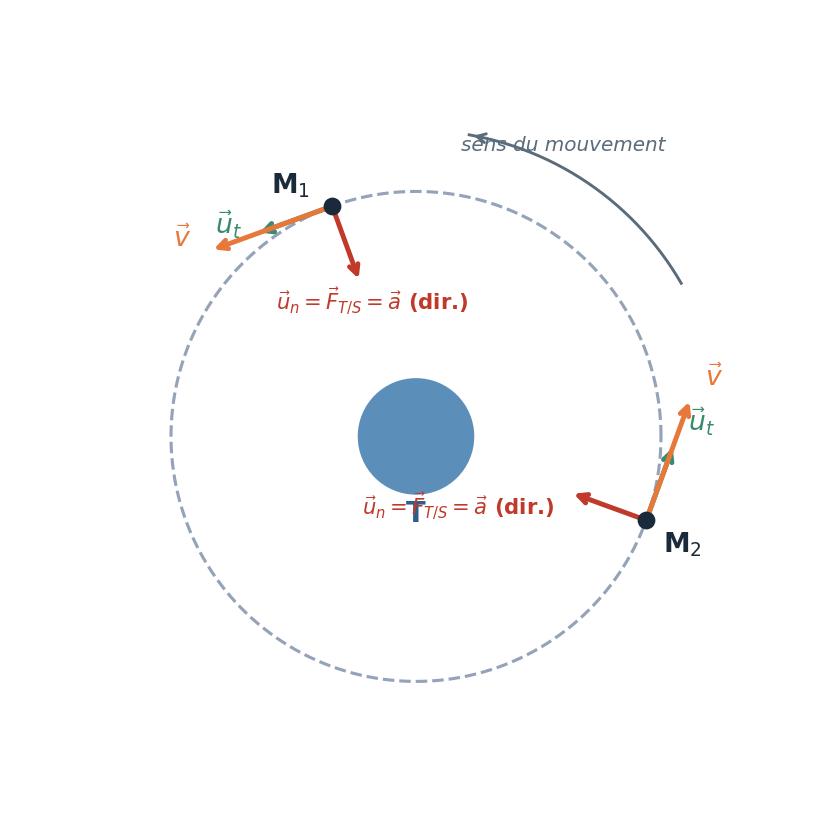
c. Le vecteur vitesse v est toujours tangent à la trajectoire circulaire, donc colinéaire et de même sens que ut. D'après la 2e loi de Newton, ma = FT/S, donc a est colinéaire et de même sens que FT/S, c'est-à-dire colinéaire et de même sens que un (accélération centripète, dirigée vers le centre de la Terre). Ce mouvement circulaire est donc nécessairement uniforme (l'accélération n'a pas de composante tangentielle).
Exercice 29 — Déterminer la durée d'une année martienne
Donnée : distance moyenne Soleil-Mars : dS-M = 1,52 ua.
Déterminer la valeur de l'année martienne dans le cadre de l'approximation d'une orbite circulaire et commenter le résultat obtenu.
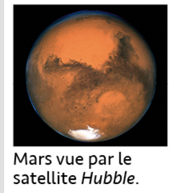
1. Rappeler l'expression littérale de la période de révolution T d'un astre en orbite circulaire de rayon a autour d'un astre attracteur de masse M.
2. Calculer la valeur de l'année martienne, en jours, à partir de cette expression.
3. Commenter le résultat obtenu.
1. Pour un astre en orbite circulaire de rayon a autour d'un astre attracteur de masse M : T = 2π√(a³/(GM)).
2. Conversion : dS-M = 1,52 ua = 1,52 × 1,5×10¹¹ = 2,28×10¹¹ m. Avec G = 6,67×10⁻¹¹ N·m²·kg⁻² et MSoleil = 1,989×10³⁰ kg :
Soit T ≈ 5,94×10⁷ / 86 400 ≈ 687 jours.
3. La valeur calculée (≈ 687 jours) est en excellent accord avec la durée donnée dans l'énoncé (687 jours) : l'écart est quasi nul. Cela confirme que l'approximation d'une orbite circulaire est très satisfaisante pour décrire le mouvement de Mars autour du Soleil (l'orbite réelle de Mars, bien qu'elliptique, a une excentricité assez faible).
Exercice 31 — Étudier un changement d'orbite lunaire
Données : masse de la Lune ML = 7,35×10²² kg ; rayon de la Lune RL = 1,74×10⁶ m ; la période de révolution T du centre de masse d'un système en orbite circulaire de rayon R autour d'un astre attracteur de masse M s'écrit : T = 2π√(R³/(GM)).
Déterminer la durée Δt du voyage du module lunaire sur l'orbite de transfert.
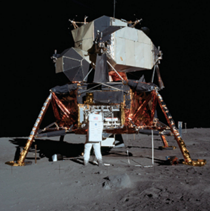
1. Calculer les rayons r1 et r2 des deux orbites circulaires (avant et après le changement d'orbite).
2. L'orbite de transfert est une ellipse dont r1 et r2 sont les distances extrêmes au centre de la Lune. Exprimer le demi-grand axe a de cette ellipse en fonction de r1 et r2, puis calculer sa valeur.
3. En admettant que la relation donnée pour une orbite circulaire reste valable pour l'orbite elliptique de transfert en remplaçant R par a, exprimer puis calculer la période T de cette orbite de transfert.
4. En déduire la durée Δt du voyage du module lunaire sur l'orbite de transfert, en secondes puis en minutes.
1. r1 = RL + h1 = 1,74×10⁶ + 1,10×10⁵ = 1,85×10⁶ m ; r2 = RL + h2 = 1,74×10⁶ + 1,5×10⁴ = 1,755×10⁶ m.
2. a = (r1 + r2)/2 = (1,85×10⁶ + 1,755×10⁶)/2 ≈ 1,80×10⁶ m.
3. T = 2π√(a³/(GML)) = 2π × √[(1,80×10⁶)³ / (6,67×10⁻¹¹ × 7,35×10²²)] ≈ 6,87×10³ s (≈ 1 h 54 min pour un tour complet).
4. Δt = T/2 ≈ 6,87×10³/2 ≈ 3,43×10³ s ≈ 57,2 min (soit environ 57 min 14 s), durée cohérente avec le déroulement historique de la descente du module lunaire d'Apollo 11 vers la surface.
Exercice 33 — Deux satellites de Neptune
Données : masse de Neptune MN = 1,02×10²⁶ kg ; période de révolution de Triton TTriton = 5,9 jours ; période de révolution de Néréide TNéréide = 360 jours.
a. Indiquer le référentiel dans lequel le mouvement de Triton est circulaire.
b. En supposant que Triton n'est soumis qu'à l'attraction de Neptune, montrer que dans ce référentiel son mouvement est uniforme et exprimer la valeur v de sa vitesse en fonction de G, MN et R.
c. Établir l'expression de la période de révolution TTriton de Triton en fonction de G, MN et R.
d. Exprimer puis calculer le rayon R de l'orbite de Triton.
e. En déduire la valeur a du demi-grand axe de l'orbite de Néréide.
a. Le mouvement de Triton est circulaire dans le référentiel neptunocentrique (origine au centre de Neptune, axes dirigés vers trois étoiles lointaines fixes), supposé galiléen.
b. Dans le repère de Frenet, la seule force appliquée à Triton est la force de gravitation exercée par Neptune, dirigée vers le centre de Neptune : elle est donc colinéaire à un et n'a pas de composante tangentielle. D'après la 2e loi de Newton, m·at = 0 donc at = dv/dt = 0 : le mouvement est uniforme. En projection sur un : m·v²/R = G·MN·m/R², d'où v = √(G·MN/R).
c. Le mouvement étant uniforme, TTriton = 2πR/v = 2πR/√(G·MN/R), soit TTriton = 2π√(R³/(G·MN)) (on retrouve la formule habituelle).
d. En isolant R : R = [G·MN·TTriton²/(4π²)]^(1/3). Avec TTriton = 5,9 × 86 400 = 5,10×10⁵ s : R ≈ 3,55×10⁸ m (≈ 355 000 km).
e. D'après la troisième loi de Kepler appliquée aux deux satellites de Neptune : TTriton²/R³ = TNéréide²/a³, donc a = R × (TNéréide/TTriton)^(2/3). Avec TNéréide = 360 jours et TTriton = 5,9 jours : a ≈ 5,50×10⁹ m (≈ 5,50×10⁶ km), une valeur cohérente avec l'excentricité connue de l'orbite de Néréide (satellite très éloigné de Neptune sur une trajectoire très elliptique).
Exercice 36 — Satellites Galileo
▶ Vidéo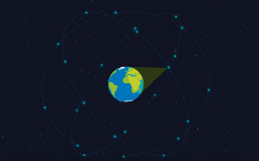
a. Dans le repère de Frenet associé au centre de masse S d'un satellite de la constellation Galileo, donner l'expression vectorielle de la force de gravitation FT/S exercée par la Terre sur le satellite.
b. Sans souci d'échelle, représenter sur un schéma la Terre, le repère de Frenet et la force FT/S pour deux satellites de la constellation occupant la même orbite.
c. À l'aide de la deuxième loi de Newton, exprimer le vecteur accélération a du centre de masse S de l'un de ces satellites en fonction des données.
d. Montrer que le mouvement du centre de masse S de ce satellite est uniforme et calculer la valeur v de sa vitesse en m·s⁻¹ puis en km·h⁻¹.
e. Compléter le schéma réalisé précédemment en représentant les vecteurs vitesse et accélération du centre de masse des deux satellites.
a. FT/S = G·m·MT/(RT+h)² · un.
b.
c. Système : satellite de masse m constante en orbite circulaire de rayon RT+h autour de la Terre de masse MT.
Référentiel : géocentrique, supposé galiléen.
Repère : repère de Frenet associé à tout instant au centre de masse S du satellite (S ; ut, un).
Bilan des forces appliquées au satellite : FT/S = G·m·MT/(RT+h)² · un
D'après la 2e loi de Newton appliquée au satellite de masse m constante, dans le référentiel géocentrique supposé galiléen, le vecteur accélération a du centre de masse S vérifie : ΣFext = ma.
Sachant que ΣFext = FT/S = G·m·MT/(RT+h)² · un, on a : a = G·MT/(RT+h)² · un (1).
d. Dans le repère de Frenet associé à S, comme S décrit un mouvement circulaire de rayon RT+h, en notant v la valeur de la vitesse de S, le vecteur accélération a de S s'écrit : a = dv/dt · ut + v²/(RT+h) · un (2).
Par identification des termes des relations (1) et (2) : dv/dt = 0 soit v = cste, le mouvement est uniforme ; v²/(RT+h) = G·MT/(RT+h)² soit v = √(G·MT/(RT+h)).
A.N. : v = √(6,67×10⁻¹¹ × 5,97×10²⁴ / (6,371×10⁶ + 23522×10³)) ≈ 3,65×10³ m·s⁻¹, soit v = 3,65 km·s⁻¹ × 3600 s·h⁻¹ ≈ 1,31×10⁴ km·h⁻¹.
e.
Exercice 38 — Astéroïde Cérès
En 2015, la sonde spatiale Dawn, de masse m, s'est positionnée autour de Cérès sur une orbite circulaire à l'altitude h = 13 500 km avec une période de révolution T = 15 jours solaires terrestres.
Donnée : masse de Cérès MC = 9,46×10²⁰ kg.
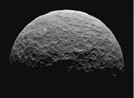
a. Indiquer les caractéristiques de la force exercée par Cérès sur la sonde Dawn.
b. Montrer que, dans le cas d'une orbite circulaire, le mouvement de la sonde Dawn autour de Cérès est uniforme.
c. Établir que la valeur v de la vitesse de la sonde Dawn sur son orbite à l'altitude h autour de Cérès est donnée par la relation : v = √(GMC/(RC+h)).
d. En déduire l'expression du quotient T²/(RC+h)³ en fonction de G et MC.
e. Déterminer une valeur de la masse de Cérès dans le cadre de l'approximation d'une orbite circulaire. Commenter le résultat obtenu.
a. Dans le repère de Frenet (D ; ut, un), associé au centre de masse D de la sonde Dawn en orbite circulaire autour de Cérès, la force exercée par Cérès sur la sonde est modélisée par le vecteur :
Direction : celle de la droite portant les centres de masse C de Cérès et D de la sonde Dawn.
Sens : de la sonde Dawn vers Cérès.
Norme : FC/D = G·m·MC/(RC+h)²
b. D'après la question a., la seule force exercée sur la sonde Dawn est FC/D, colinéaire à un : elle n'a donc pas de composante tangentielle. D'après la 2e loi de Newton appliquée à la sonde de masse m constante, dans le référentiel cérocentrique supposé galiléen, ma = FC/D, donc la composante tangentielle de l'accélération est nulle : m·dv/dt = 0 soit dv/dt = 0. Ainsi v = cste : le mouvement est uniforme.
c. Dans le repère de Frenet associé à D, comme D décrit un mouvement circulaire de rayon RC+h, le vecteur accélération a de D s'écrit : a = dv/dt · ut + v²/(RC+h) · un. D'après la 2e loi de Newton, ma = FC/D, soit en projection sur un : m·v²/(RC+h) = G·m·MC/(RC+h)², d'où après simplification par m : v = √(G·MC/(RC+h)).
d. Le mouvement étant uniforme et circulaire, la sonde parcourt le périmètre 2π(RC+h) de son orbite à la vitesse constante v en une période T : T = 2π(RC+h)/v. En remplaçant v par l'expression de la question c. : T = 2π(RC+h)/√(GMC/(RC+h)) = 2π√((RC+h)³/(GMC)), soit en élevant au carré : T²/(RC+h)³ = 4π²/(GMC).
e. En isolant MC dans la relation précédente : MC = 4π²(RC+h)³/(G·T²). Avec RC+h = 470 + 13 500 = 13 970 km = 1,397×10⁷ m et T = 15 × 86 400 = 1,296×10⁶ s :
MC = 4π² × (1,397×10⁷)³ / (6,67×10⁻¹¹ × (1,296×10⁶)²) ≈ 9,61×10²⁰ kg.
Cette valeur est proche de la donnée de l'énoncé (MC = 9,46×10²⁰ kg), avec un écart relatif d'environ 1,6 %. Les deux valeurs de masse obtenues sont donc cohérentes : la prise en compte des incertitudes de mesures est indispensable pour être certain de la conclusion donnée.
Exercice 40 — Modèle de Bohr de l'atome d'hydrogène
Données : e = 1,602×10⁻¹⁹ C ; k = 9,0×10⁹ SI ; 1 eV = 1,602×10⁻¹⁹ J ; rayon atomique de l'hydrogène rh = 53×10⁻¹² m.
a. Donner la définition d'une force centripète puis l'expression vectorielle de F. Schématiser la situation en représentant le proton, l'électron, l'orbite de l'électron, la force F et le repère de Frenet associé à l'électron.
b. Déterminer les caractéristiques du vecteur accélération a de l'électron en fonction de la valeur v de sa vitesse et du rayon r.
c. En déduire que le mouvement de l'électron est uniforme et montrer que la valeur v de sa vitesse est donnée par l'expression v = e×√(k/(m×r)).
d. Exprimer la valeur de l'énergie cinétique 𝓔c de l'électron en fonction de e, k et r.
e. Dans le modèle de Bohr, l'énergie cinétique de l'électron est quantifiée et ne peut prendre que certaines valeurs telles que 𝓔c,n = 13,6/n² (en eV) où n est un entier strictement positif. Exprimer le rayon rn de l'orbite de l'électron en fonction de n.
f. Déterminer l'ordre de grandeur du rayon de l'orbite de l'électron pour n = 1 et comparer le résultat à l'ordre de grandeur du rayon atomique de l'hydrogène.
g. Décrire l'évolution des trajectoires et de l'énergie cinétique de l'électron lorsque n augmente.
a. Dans le cas d'un mouvement circulaire autour d'un centre O, une force est centripète si elle pointe à tout instant vers O. D'après l'énoncé, dans le repère de Frenet (M ; ut, un) associé à l'électron : F = k×e²/r² · un.
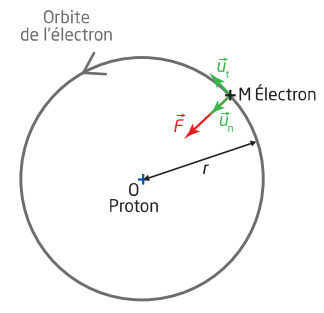
b. Dans le repère de Frenet associé à M, pour un mouvement circulaire de rayon r, en notant v la valeur de la vitesse de M, le vecteur accélération a de M s'écrit : a = dv/dt · ut + v²/r · un (1). Système : électron de masse m constante en orbite circulaire de rayon r autour du proton. Référentiel : lié au proton et supposé galiléen. Repère : repère de Frenet (M, ut, un) associé à l'électron. Bilan des forces appliquées à l'électron : F = k×e²/r² · un. D'après la 2e loi de Newton appliquée à l'électron de masse m constante, dans le référentiel lié au proton supposé galiléen, le vecteur accélération a du centre de masse M de l'électron vérifie : ΣFext = m·a, soit m·a = k×e²/r² · un (2).
c. Par identification des termes des relations (1) et (2) on a : dv/dt = 0 soit v = cste : le mouvement de l'électron est uniforme. Et v²/r = k×e²/(m×r) soit v = e×√(k/(m×r)).
d. Sachant que 𝓔c = ½·m·v², on a : 𝓔c = ½ × k×e²/r.
e. rn = ½ × k×e² / 𝓔c,n
rn = ½ × (9,0×10⁹ × (1,602×10⁻¹⁹)²) / (13,6/n² × 1,602×10⁻¹⁹)
rn = 5,3×10⁻¹¹ × n² (en m).
f. Pour n = 1, r1 = 5,3×10⁻¹¹ m. D'après l'énoncé, le rayon atomique de l'hydrogène vaut 53×10⁻¹² m = 5,3×10⁻¹¹ m : la valeur du rayon de la première orbite de l'électron est donc cohérente avec celle du rayon atomique de l'hydrogène.
g. Lorsque n augmente, le rayon de l'orbite de l'électron augmente en n² tandis que son énergie cinétique diminue d'un facteur 1/n².
Exercice 41 — Communication entre la Lune et Apollo
Le schéma ci-dessous représente l'orbite du centre de masse de la capsule Apollo autour de la Lune. Les échelles ne sont pas respectées.
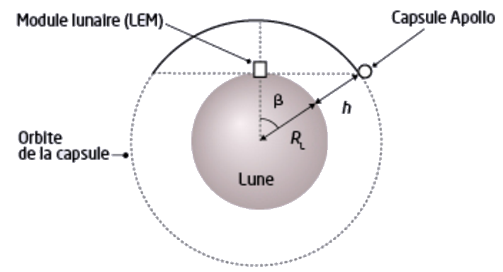
L'étude du mouvement de la capsule se fait dans le référentiel lunocentrique supposé galiléen, défini par le centre de la Lune supposée sphérique et trois axes dirigés vers trois étoiles fixes.
Données : rayon de la Lune RL = 1,74×10³ km ; masse de la Lune ML = 7,33×10²² kg.
a. Expliquer pourquoi la communication entre les astronautes sur la Lune et leur collègue resté dans la capsule ne peut se faire que sur la partie de l'orbite en gras.
b. Déterminer la durée maximale de la communication à chaque révolution de la capsule.
a. La Lune, corps opaque, fait écran aux ondes radio utilisées pour communiquer. La communication entre les astronautes du LEM (posé sur la Lune) et celui resté dans la capsule Apollo n'est donc possible que lorsque la capsule se trouve en visibilité directe du LEM, c'est-à-dire sur la portion de l'orbite (en gras sur le schéma) où la Lune ne s'interpose pas entre les deux. Dès que la capsule passe derrière la Lune (vue depuis le LEM), la communication est interrompue.
b. Système : capsule de masse m constante en orbite circulaire de rayon RL+h autour de la Lune de masse ML. Référentiel : lunocentrique supposé galiléen. Repère : repère de Frenet associé au centre de masse C de la capsule (C ; ut, un). Bilan des forces appliquées à la capsule : FL/C = G·m·ML/(RL+h)² · un.
D'après la 2e loi de Newton appliquée à la capsule de masse m constante, dans le référentiel lunocentrique supposé galiléen, le vecteur accélération a du centre de masse C de la capsule vérifie : ΣFext = ma. Or a = dv/dt · ut + v²/(RL+h) · un. Par identification, on obtient dv/dt = 0 (mouvement uniforme) et v²/(RL+h) = G·ML/(RL+h)², soit v = √(GML/(RL+h)).
Le mouvement étant uniforme et circulaire, la capsule parcourt la distance d = 2π(RL+h) (circonférence de son orbite) pendant une révolution de durée T, sur v = 2π(RL+h)/T, soit : T = 2π√((RL+h)³/(GML)).
D'après les considérations géométriques (triangle rectangle formé par le centre de la Lune, le LEM et la capsule) : cos(β) = RL/(RL+h), soit β = cos⁻¹(RL/(RL+h)).
Ainsi Δt = 2β/(2π) × T = 2 × √((RL+h)³/(GML)) × cos⁻¹(RL/(RL+h)).
Soit Δt ≈ 789 s ≈ 13 min 8 s.
Exercice 43 — Communiquer à l'oral en s'appuyant sur un support visuel unique
On se propose d'exploiter ces données collectées en direct pour tester la 2e loi de Kepler, puis pour estimer la masse de la Terre MT en assimilant le mouvement de l'ISS à une orbite circulaire.
Donnée : valeur de référence MT = 5,9722×10²⁴ kg (source : Union Astronomique Internationale).
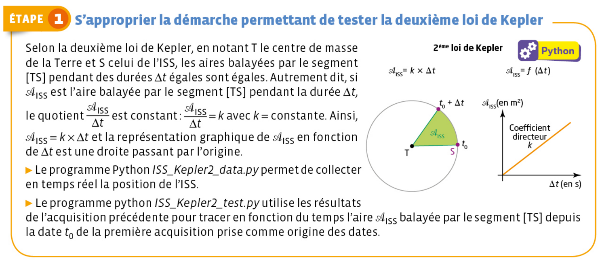
a. Justifier que l'on peut tester la 2e loi de Kepler (loi des aires) à partir de mesures ponctuelles de la position de l'ISS, sans en connaître la trajectoire complète.
b. Le programme 1 ci-dessous collecte en direct la position de l'ISS puis doit tracer l'aire balayée Aire(t) depuis l'instant t0 de la première acquisition. Compléter les parties « À COMPLÉTER » (conversion en coordonnées cartésiennes, calcul de l'aire d'un triangle, modélisation par une droite), puis exécuter le programme et commenter le graphique obtenu.
np.cross et np.linalg.norm). Pour la modélisation Aire = m·t + p, utilise np.polyfit(t, Aire, 1).c. En modélisant le mouvement de l'ISS par une orbite circulaire, montrer que la masse de la Terre vérifie MT = v²×(RT+h)/G, avec v la vitesse de l'ISS et h son altitude.
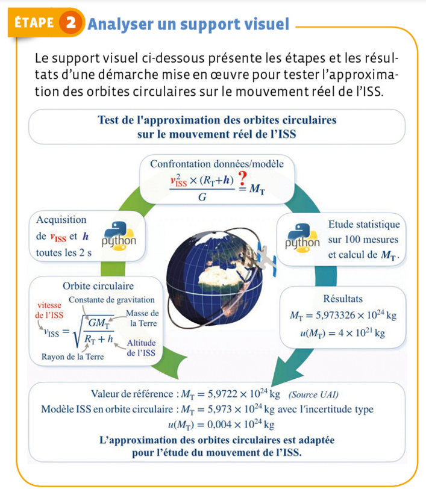
d. Le programme 2 ci-dessous collecte en direct l'altitude et la vitesse de l'ISS. Compléter la partie « À COMPLÉTER » afin d'estimer, par une méthode de Monte-Carlo (100 000 tirages aléatoires), la valeur moyenne de MT et son incertitude-type u(MT), puis exécuter le programme.
Alea déjà fournie, et stocke chaque résultat dans la liste d. La valeur moyenne de MT est ensuite np.mean(d) et son incertitude-type est l'écart-type de la distribution, np.std(d, ddof=1).e. Comparer la valeur de MT obtenue à la valeur de référence MT = 5,9722×10²⁴ kg et conclure quant à la pertinence de l'approximation d'une orbite circulaire pour décrire le mouvement réel de l'ISS.
⚠️ Les programmes s'exécutent directement dans le navigateur (aucune installation requise). Si l'API de l'ISS est temporairement inaccessible depuis le navigateur, un jeu de données de secours (à but de démonstration) prend automatiquement le relais.
a. D'après la 2e loi de Kepler, l'aire balayée par le segment [Terre–ISS] est proportionnelle à la durée Δt considérée, quel que soit l'instant de départ choisi sur l'orbite. Il n'est donc pas nécessaire de connaître la trajectoire complète : il suffit de mesurer plusieurs positions successives, de calculer l'aire cumulée balayée depuis la première mesure, puis de vérifier que le graphique Aire = f(t) est bien une droite passant par l'origine.
b. Programme 1 complété (exécutable ci-dessous) :
Le graphique obtenu est (aux fluctuations de mesure près) une droite passant par l'origine : l'aire balayée par le segment [Terre–ISS] croît proportionnellement au temps, quel que soit l'intervalle considéré. La 2e loi de Kepler (loi des aires) est donc vérifiée pour le mouvement de l'ISS.
c. Système : {ISS}, de masse m. Référentiel géocentrique supposé galiléen. Dans le repère de Frenet (M ; ut, un), seule force : F = G·MT·m/(RT+h)² · un. D'après la 2e loi de Newton, ma = F, soit en projection sur un : m·v²/(RT+h) = G·MT·m/(RT+h)². Après simplification par m puis isolement de MT : MT = v²×(RT+h)/G.
d. Programme 2 complété (exécutable ci-dessous) :
On obtient typiquement (les valeurs exactes dépendent des mesures collectées en direct) : MT ≈ 5,97×10²⁴ kg avec u(MT) de l'ordre de 10²¹-10²² kg.
e. La valeur obtenue est très proche de la valeur de référence MT = 5,9722×10²⁴ kg (écart relatif typiquement inférieur à 1 %), et l'écart constaté est cohérent avec l'incertitude-type calculée. L'approximation d'une orbite circulaire est donc adaptée pour décrire le mouvement de l'ISS et en déduire la masse de la Terre.
Un tracteur gravitationnel pour dévier un astéroïde
La planète Mercure
Mission Rosetta
Accélération d'un satellite
Force exercée par l'astre (masse M, centre O) sur le satellite (masse m, centre P) : F = mg avec g = −G·M/r² · uOP (uOP dirigé de O vers P ; on retrouve a = G·M/r² · un de la section A1, un étant orienté vers O, donc opposé à uOP).
2e loi de Newton : ma = F ⟹ a = g : l'accélération ne dépend pas de la masse du satellite.
Satellite en mouvement circulaire de rayon r
Dans le repère de Frenet : a = dv/dt · ut + v²/r · un
- le mouvement est uniforme ;
- la vitesse est v = √(GM/r) ;
- la période vérifie T²/r³ = 4π²/GM.
Un satellite géostationnaire est fixe dans le référentiel terrestre.
Loi des orbites (1ère loi)
Dans le référentiel héliocentrique, l'orbite d'une planète est une ellipse dont le Soleil occupe l'un des foyers. a = demi-grand axe de l'ellipse.
Loi des aires (2e loi)
Le segment Soleil–planète balaie des aires égales en des durées égales. Conséquence : la vitesse n'est pas constante (max au périhélie, min à l'aphélie).
Loi des périodes (3e loi)
Les trois lois de Kepler sont aussi valables pour le mouvement d'un satellite naturel ou artificiel autour d'une planète ; cette dernière joue alors le rôle du Soleil.
- La force de gravitation universelle varie en 1/d² et est responsable des mouvements des astres.
- Pour un satellite en orbite circulaire, le mouvement est nécessairement uniforme et l'accélération est centripète.
- v = √(GM/r) et T = 2π√(r³/GM) pour une orbite circulaire.
- 1ère loi de Kepler : orbites elliptiques, Soleil à un foyer.
- 2e loi de Kepler : loi des aires ⟹ vitesse non constante sur une ellipse.
- 3e loi de Kepler : T²/a³ = constante, ne dépend que de la masse de l'astre central.
- Loi d'attraction universelle
- Deux corps A et B, de masses mA et mB séparés d'une distance d, exercent l'un sur l'autre une force d'attraction gravitationnelle F = G·mA·mB/d², avec G = 6,67×10⁻¹¹ N·m²·kg⁻² la constante de gravitation universelle.
- Repère de Frenet
- Repère mobile lié au point en mouvement, formé des vecteurs unitaires ut (tangent à la trajectoire, dans le sens du mouvement) et un (perpendiculaire à ut, dirigé vers le centre de la trajectoire) ; adapté à la description d'un mouvement circulaire.
- Accélération centripète
- Composante de l'accélération dirigée vers le centre de la trajectoire (selon un) ; pour un mouvement circulaire, elle vaut a = v²/r.
- Mouvement circulaire uniforme
- Mouvement sur une trajectoire circulaire à vitesse constante (dv/dt = 0) ; l'accélération est alors purement centripète, dirigée vers le centre du cercle.
- Période de révolution
- Durée d'un tour complet effectué par un astre ou un satellite sur son orbite ; pour une orbite circulaire de rayon r parcourue à la vitesse v, T = 2πr/v.
- Référentiel héliocentrique
- Référentiel dont l'origine est le centre du Soleil et les axes dirigés vers des étoiles lointaines fixes ; adapté à l'étude du mouvement des planètes autour du Soleil.
- Satellite géostationnaire
- Satellite dont la période de révolution est égale à la période de rotation de la Terre sur elle-même ; il paraît donc fixe dans le référentiel terrestre.
- Périhélie / Aphélie
- Sur une orbite elliptique, position la plus proche du Soleil (périhélie) ou la plus éloignée (aphélie) — on parle de périgée/apogée pour un satellite terrestre. D'après la loi des aires, la vitesse est maximale au périhélie et minimale à l'aphélie.
- 1ère loi de Kepler — loi des orbites
- Dans le référentiel héliocentrique, l'orbite de chaque planète est une ellipse dont le Soleil occupe l'un des foyers.
- 2e loi de Kepler — loi des aires
- Le segment reliant le Soleil à une planète balaie des aires égales pendant des durées égales ; la vitesse n'est donc pas constante sur une orbite elliptique.
- 3e loi de Kepler — loi des périodes
- Pour un même astre attracteur central, le rapport T²/a³ est constant, quelle que soit la planète ou le satellite considéré (a : demi-grand axe de l'orbite).
- Astre attracteur
- Astre central (étoile, planète) dont la masse M impose, par gravitation, le mouvement du système étudié (planète, satellite) en orbite autour de lui.
- Excentricité e
- Grandeur sans unité, e = c/a (c : distance focale, a : demi-grand axe), qui caractérise la forme d'une ellipse : e = 0 pour un cercle, e proche de 1 pour une ellipse très allongée (0 < e < 1).
- Vitesse angulaire ω
- Grandeur, en rad·s-1, qui mesure la vitesse de rotation d'un point autour d'un centre ; pour un mouvement circulaire uniforme de période T, ω = 2π/T.
- Vitesse aréolaire
- Aire balayée par le rayon vecteur (Soleil-planète ou astre-satellite) par unité de temps, dA/dt ; elle est constante d'après la loi des aires (2e loi de Kepler).
- Ellipse / Foyer / Demi-grand axe
- Une ellipse est l'ensemble des points M tels que FM + F'M = 2a, où F et F' sont ses deux foyers et a son demi-grand axe ; un cercle est une ellipse particulière dont les deux foyers sont confondus.
- Satellite / Orbite
- Un satellite est un corps en orbite autour d'un astre de masse plus grande que la sienne ; son orbite est l'ensemble des positions successives qu'il occupe dans l'espace au cours de son mouvement.